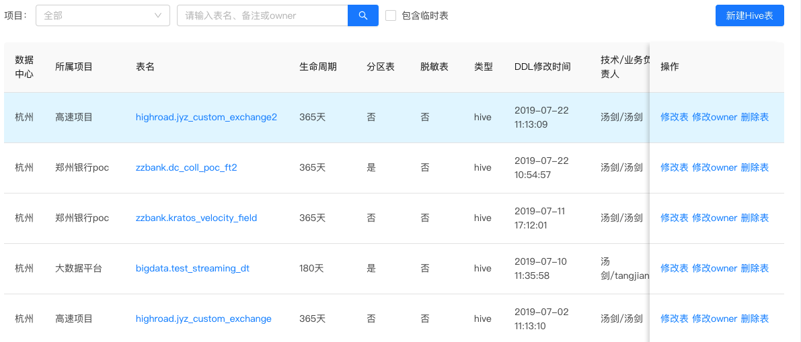
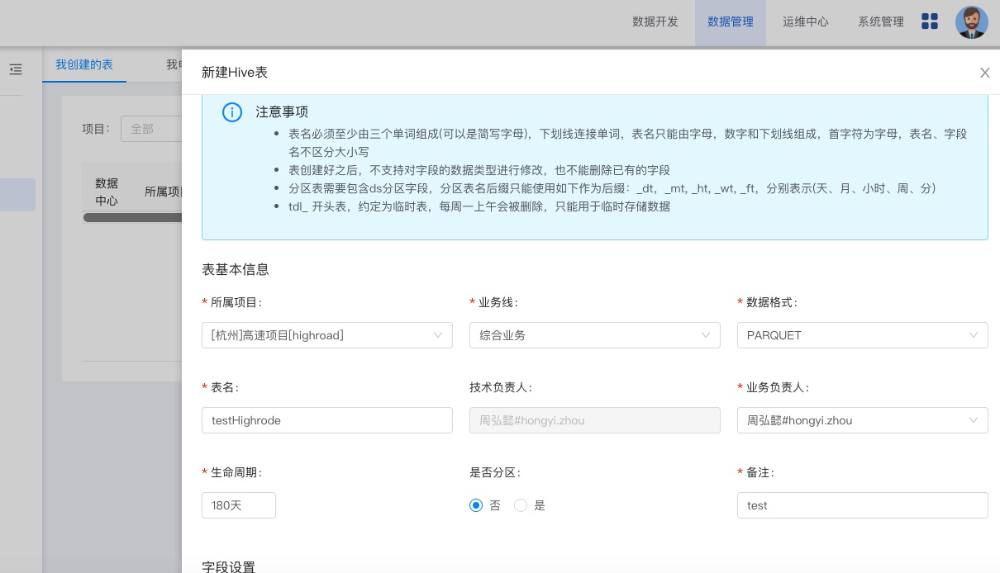
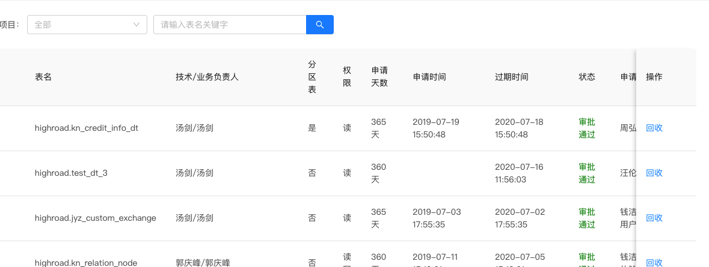

我的表管理
该模块的主要功能包括新建Hive表，对已经创建表的部分属性的修改，删除表.申请其他表的权限的记录和对别人申请的权限的回收操作。
3.3.3.1我创建的表
这个页面可以看到所有我创建的表的信息,可以修改表的信息和Owner,删除表的操作。 
创建hive表，如图所示创建 
创建后可以在页面看到表的信息。
3.3.3.2 平台支持的数据类型
数字类型
INT(4-byte signed integer, from -2,147,483,648 to 2,147,483,647) BIGINT (8-byte signed integer, from -9,223,372,036,854,775,808 to 9,223,372,036,854,775,807) DOUBLE (8-byte double precision floating point number) Decimal the DECIMAL datatype using a DECIMAL(precision, scale) syntax. If scale is not specified, it defaults to 0 (no fractional digits). If no precision is specified, it defaults to 10.
日期类型
TIMESTAMP
其它类型
STRING BOOLEAN (true/false)
分区列只支持int, bigint, string三种类型！！！
时间分区列名约定使用ds，对应分区值例如:
按月分区：ds='201703'
按天分区：ds='20170302'
按小时分区分区：ds='201703'
3.3.3.3 我申请的表
申请表的权限通过后即可查看到申请具体表的权限和有限期，如图所示

3.3.3.4 申请记录
在数据权限申请模块向申请某表的权限后，就可以在申请记录看到具体的记录。
 对没有审核的记录可以撤销申请操作。
对没有审核的记录可以撤销申请操作。
申请的权限需要表的拥有者审批。
3.3.3.5 权限回收
可以对其他用户申请自己创建的表并且通过的权限做回收操作，回收后该用户将不能再访问表的数据。平台管理员的角色权限可以回收所有审核通过的访问表的权限。 